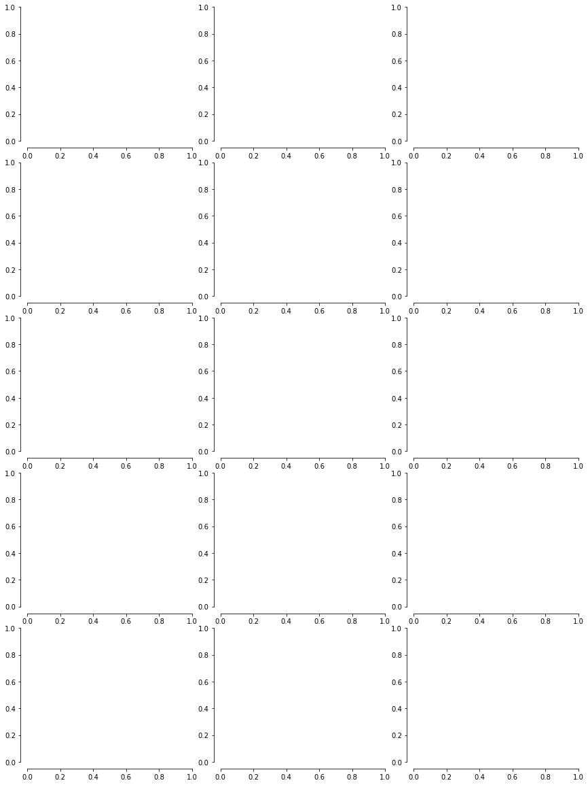
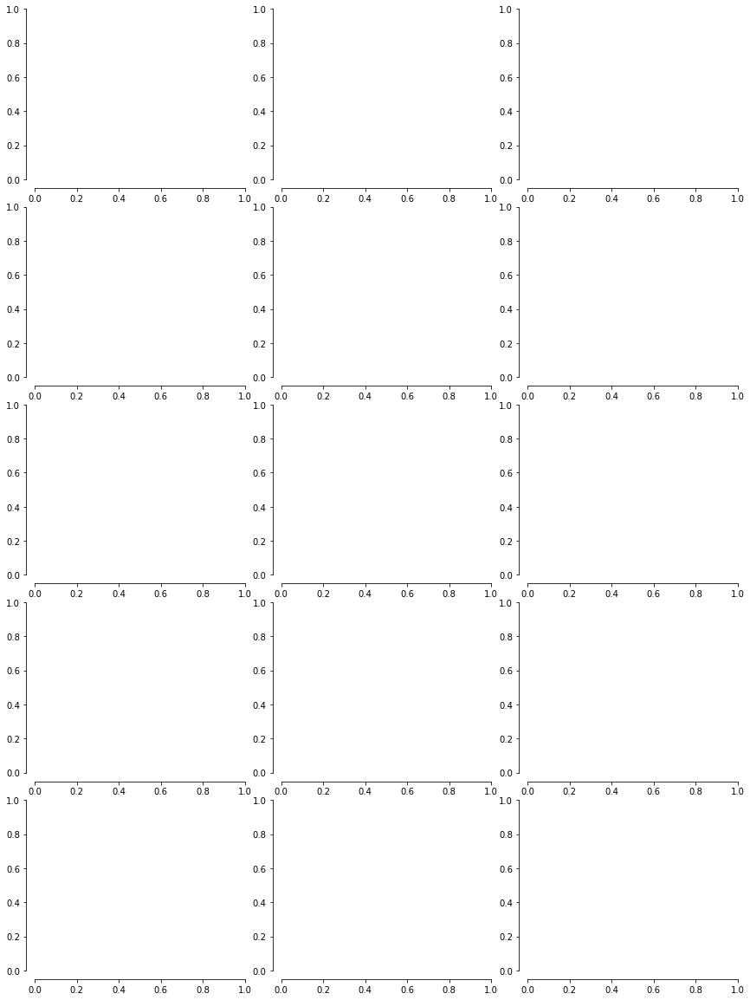
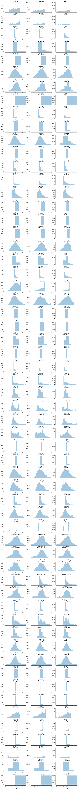

import pandas as pd
import seaborn as sns
import matplotlib.pyplot as plt
df = pd.read_parquet("../../urbangrammar_samba/sp_sig_concept/barcelona/convolutions.pq")
df
| stcOri_q1 | stcOri_q2 | stcOri_q3 | stbOri_q1 | stbOri_q2 | stbOri_q3 | stbCeA_q1 | stbCeA_q2 | stbCeA_q3 | sdcLAL_q1 | ... | lseCWA_q3 | lteOri_q1 | lteOri_q2 | lteOri_q3 | lteWNB_q1 | lteWNB_q2 | lteWNB_q3 | lieWCe_q1 | lieWCe_q2 | lieWCe_q3 | |
|---|---|---|---|---|---|---|---|---|---|---|---|---|---|---|---|---|---|---|---|---|---|
| tID | |||||||||||||||||||||
| 0 | 15.628853 | 15.927105 | 15.987896 | 15.722108 | 15.893485 | 16.126171 | 0.062103 | 0.171894 | 0.265149 | 36.220705 | ... | 83.845622 | 15.996900 | 16.016601 | 16.142931 | 0.019577 | 0.021098 | 0.027384 | 0.001625 | 0.001690 | 0.003033 |
| 1 | 15.927105 | 15.959191 | 16.059192 | 15.893485 | 15.987675 | 16.054451 | 0.033225 | 0.037966 | 0.066844 | 44.814662 | ... | 55.541969 | 15.977199 | 15.977199 | 15.977199 | 0.019577 | 0.019577 | 0.019577 | 0.001690 | 0.001690 | 0.001690 |
| 2 | 15.890717 | 15.959191 | 16.059192 | 15.880055 | 15.987675 | 16.054451 | 0.033225 | 0.037966 | 0.043887 | 43.644507 | ... | 55.541969 | 15.977199 | 15.977199 | 15.977199 | 0.019577 | 0.019577 | 0.019577 | 0.001690 | 0.001690 | 0.001690 |
| 3 | 15.793310 | 15.822243 | 15.990718 | 15.684123 | 15.772435 | 15.946831 | 0.043887 | 0.049808 | 0.109187 | 43.644507 | ... | 55.541969 | 15.977199 | 15.977199 | 15.977199 | 0.019577 | 0.019577 | 0.019577 | 0.001690 | 0.001690 | 0.001690 |
| 4 | 15.793310 | 15.822243 | 15.899721 | 15.684123 | 15.772435 | 16.199898 | 0.109187 | 0.168565 | 0.409364 | 43.734046 | ... | 55.541969 | 15.977199 | 15.977199 | 15.977199 | 0.019577 | 0.019577 | 0.019577 | 0.001690 | 0.001690 | 0.001690 |
| ... | ... | ... | ... | ... | ... | ... | ... | ... | ... | ... | ... | ... | ... | ... | ... | ... | ... | ... | ... | ... | ... |
| 82370 | 24.875500 | 24.886939 | 25.573647 | 25.352761 | 25.352761 | 25.352761 | 11.287861 | 11.287861 | 11.287861 | 120.740314 | ... | 139.655956 | 24.886939 | 25.573647 | 26.262159 | 0.005785 | 0.011068 | 0.014365 | 0.000052 | 0.000540 | 0.001032 |
| 82371 | 18.857356 | 24.881220 | 25.574549 | 24.845419 | 25.352761 | 25.608563 | 1.059855 | 6.470887 | 16.698894 | 168.287507 | ... | 2360.077133 | 25.574549 | 26.694622 | 29.654019 | 0.004280 | 0.008197 | 0.012487 | 0.000052 | 0.000077 | 0.000567 |
| 82372 | 23.242862 | 25.420729 | 25.917903 | 25.469061 | 25.469336 | 25.533876 | 0.793098 | 3.010670 | 4.428292 | 238.630989 | ... | 4580.498311 | 25.917903 | 29.221556 | 32.180953 | 0.002775 | 0.004280 | 0.006191 | 0.000052 | 0.000052 | 0.000053 |
| 82373 | 22.249024 | 25.980808 | 30.062566 | 25.377299 | 25.516147 | 25.632106 | 3.476976 | 5.627341 | 6.580825 | 123.952606 | ... | 4580.498311 | 26.007012 | 29.654019 | 32.180953 | 0.002775 | 0.006692 | 0.021982 | 0.000052 | 0.000077 | 0.002762 |
| 82374 | 21.921899 | 33.559567 | 36.338687 | 35.072497 | 35.879344 | 36.189536 | 1.138225 | 4.517913 | 14.208306 | 49.703307 | ... | 209.571208 | 31.361431 | 31.361431 | 35.757704 | 0.008946 | 0.012216 | 0.012216 | 0.000936 | 0.001018 | 0.001101 |
82375 rows × 177 columns
for i in range(0, 185, 15):
fig, ax = plt.subplots(5, 3, figsize=(12, 16))
for x in range(5):
for y in range(3):
if i < 177:
char = df.columns[i]
i += 1
sns.distplot(df[char], ax=ax[x, y], kde=False,)
ax[x, y].set_title(char)
plt.tight_layout()
sns.despine(offset=10)
plt.savefig('figs/bcn_distplot_{}.pdf'.format(i), bbox_inches='tight')
/opt/conda/envs/rapids/lib/python3.8/site-packages/seaborn/distributions.py:2551: FutureWarning: `distplot` is a deprecated function and will be removed in a future version. Please adapt your code to use either `displot` (a figure-level function with similar flexibility) or `histplot` (an axes-level function for histograms).
warnings.warn(msg, FutureWarning)
/opt/conda/envs/rapids/lib/python3.8/site-packages/seaborn/distributions.py:2551: FutureWarning: `distplot` is a deprecated function and will be removed in a future version. Please adapt your code to use either `displot` (a figure-level function with similar flexibility) or `histplot` (an axes-level function for histograms).
warnings.warn(msg, FutureWarning)
/opt/conda/envs/rapids/lib/python3.8/site-packages/seaborn/distributions.py:2551: FutureWarning: `distplot` is a deprecated function and will be removed in a future version. Please adapt your code to use either `displot` (a figure-level function with similar flexibility) or `histplot` (an axes-level function for histograms).
warnings.warn(msg, FutureWarning)
/opt/conda/envs/rapids/lib/python3.8/site-packages/seaborn/distributions.py:2551: FutureWarning: `distplot` is a deprecated function and will be removed in a future version. Please adapt your code to use either `displot` (a figure-level function with similar flexibility) or `histplot` (an axes-level function for histograms).
warnings.warn(msg, FutureWarning)
/opt/conda/envs/rapids/lib/python3.8/site-packages/seaborn/distributions.py:2551: FutureWarning: `distplot` is a deprecated function and will be removed in a future version. Please adapt your code to use either `displot` (a figure-level function with similar flexibility) or `histplot` (an axes-level function for histograms).
warnings.warn(msg, FutureWarning)
/opt/conda/envs/rapids/lib/python3.8/site-packages/seaborn/distributions.py:2551: FutureWarning: `distplot` is a deprecated function and will be removed in a future version. Please adapt your code to use either `displot` (a figure-level function with similar flexibility) or `histplot` (an axes-level function for histograms).
warnings.warn(msg, FutureWarning)
/opt/conda/envs/rapids/lib/python3.8/site-packages/seaborn/distributions.py:2551: FutureWarning: `distplot` is a deprecated function and will be removed in a future version. Please adapt your code to use either `displot` (a figure-level function with similar flexibility) or `histplot` (an axes-level function for histograms).
warnings.warn(msg, FutureWarning)
/opt/conda/envs/rapids/lib/python3.8/site-packages/seaborn/distributions.py:2551: FutureWarning: `distplot` is a deprecated function and will be removed in a future version. Please adapt your code to use either `displot` (a figure-level function with similar flexibility) or `histplot` (an axes-level function for histograms).
warnings.warn(msg, FutureWarning)
/opt/conda/envs/rapids/lib/python3.8/site-packages/seaborn/distributions.py:2551: FutureWarning: `distplot` is a deprecated function and will be removed in a future version. Please adapt your code to use either `displot` (a figure-level function with similar flexibility) or `histplot` (an axes-level function for histograms).
warnings.warn(msg, FutureWarning)
/opt/conda/envs/rapids/lib/python3.8/site-packages/seaborn/distributions.py:2551: FutureWarning: `distplot` is a deprecated function and will be removed in a future version. Please adapt your code to use either `displot` (a figure-level function with similar flexibility) or `histplot` (an axes-level function for histograms).
warnings.warn(msg, FutureWarning)
/opt/conda/envs/rapids/lib/python3.8/site-packages/seaborn/distributions.py:2551: FutureWarning: `distplot` is a deprecated function and will be removed in a future version. Please adapt your code to use either `displot` (a figure-level function with similar flexibility) or `histplot` (an axes-level function for histograms).
warnings.warn(msg, FutureWarning)
 

df.columns[2]
'stcOri_q3'
standardized = (df-df.mean())/df.std()
fig, ax = plt.subplots(59, 3, figsize=(12, 120), sharex=True)
i = 0
for x in range(59):
for y in range(3):
if i < 177:
char = standardized.columns[i]
i += 1
sns.distplot(standardized[char], ax=ax[x, y], kde=False,)
ax[x, y].set_title(char)
ax[x, y].set_xlim(-3, 3)
plt.tight_layout()
sns.despine(offset=10)
# plt.savefig('figs/bcn_distplot_{}.pdf'.format(i), bbox_inches='tight')
